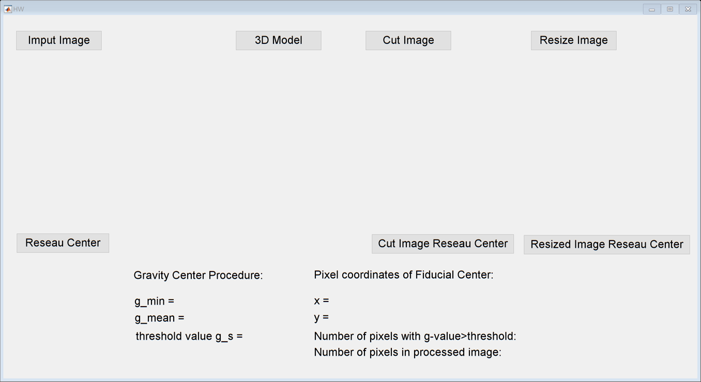

function varargout = HW(varargin)
gui_Singleton = 1;
gui_State = struct('gui_Name', mfilename, ...
'gui_Singleton', gui_Singleton, ...
'gui_OpeningFcn', @HW_OpeningFcn, ...
'gui_OutputFcn', @HW_OutputFcn, ...
'gui_LayoutFcn', [] , ...
'gui_Callback', []);
if nargin && ischar(varargin{1})
gui_State.gui_Callback = str2func(varargin{1});
end
if nargout
[varargout{1:nargout}] = gui_mainfcn(gui_State, varargin{:});
else
gui_mainfcn(gui_State, varargin{:});
end
function HW_OpeningFcn(hObject, eventdata, handles, varargin)
handles.output = hObject;
guidata(hObject, handles);
function varargout = HW_OutputFcn(hObject, eventdata, handles)
varargout{1} = handles.output;
function inputImage_Callback(hObject, eventdata, handles)
global img col row;
EnterRC;
waitfor(EnterRC);
mainGui = findobj('Name','HW');
col=getappdata(mainGui,'col');
row=getappdata(mainGui,'row');
[imagefile,imagepath]=uigetfile('*.*');
fid=fopen([imagepath,imagefile],'rb');
imgOrigin=fread(fid,[col,row]);
img=imgOrigin';
fclose(fid);
imshow(img,[],'Parent',handles.axes1);
set(handles.text1,'string',imagefile);
set(handles.textOrigin,'string',col+"×"+row);
function model_Callback(hObject, eventdata, handles)
global img col row;
Z=img;
[X,Y]=meshgrid(1:col,1:row);
axes(handles.axes2);
surf(X,Y,Z);
xlabel("x axis");
ylabel("y axis");
zlabel("gray value");
function calculateCenter_Callback(hObject, eventdata, handles)
global img x y;
gmin=roundn(min(min(img)),-2);
set(handles.txt_g_min,'string',gmin);
gmean=roundn(mean(mean(img)),-2);
set(handles.txt_g_mean,'string',gmean);
gS=roundn((gmin+gmean)/2,-2);
set(handles.txt_g_s,'string',gS);
[img1r,img1c]=size(img);
img1(img<=gS)=0;
img1(img>gS)=1;
num1=sum(img1==1);
set(handles.txt_num_thre,'string',num1);
sumPixels1=numel(img1);
set(handles.txt_pixels,'string',sumPixels1);
img1=reshape(img1,[img1r,img1c]);
sub1=img-gS;
M1=sum(sum(img1.*sub1));
x=roundn((1/M1)*sum(sum([1:img1c].*img1.*sub1)),-3);
set(handles.txt_x,'string',x);
y=roundn((1/M1)*sum(sum([1:img1r]'.*img1.*sub1)),-3);
set(handles.txt_y,'string',y);
axes(handles.axes1);
hold on;
plot(x,y,'r+','LineWidth',1);
hold off;
function cutImage_Callback(hObject, eventdata, handles)
global imgCut colCut rowCut ;
axes(handles.axes1);
imgCut=imcrop;
imshow(imgCut,[],'Parent',handles.axes3);
[rowCut,colCut]=size(imgCut);
set(handles.textCut,'string',colCut+"×"+rowCut);
function calculateCutCenter_Callback(hObject, eventdata, handles)
global imgCut colCut rowCut;
gminCut=roundn(min(min(imgCut)),-2);
set(handles.txt_g_min,'string',gminCut);
gmeanCut=roundn(mean(mean(imgCut)),-2);
set(handles.txt_g_mean,'string',gmeanCut);
gSCut=roundn((gminCut+gmeanCut)/2,-2);
set(handles.txt_g_s,'string',gSCut);
img2(imgCut<=gSCut)=0;
img2(imgCut>gSCut)=1;
num2=sum(img2==1);
set(handles.txt_num_thre,'string',num2);
sumPixels2=numel(img2);
set(handles.txt_pixels,'string',sumPixels2);
img2=reshape(img2,[rowCut,colCut]);
sub2=imgCut-gSCut;
M2=sum(sum(img2.*sub2));
xCut=roundn((1/M2)*sum(sum([1:colCut].*img2.*sub2)),-3);
set(handles.txt_x,'string',xCut);
yCut=roundn((1/M2)*sum(sum([1:rowCut]'.*img2.*sub2)),-3);
set(handles.txt_y,'string',yCut);
axes(handles.axes3);
hold on;
plot(xCut,yCut,'y+','LineWidth',1);
hold off;
function resizeImage_Callback(hObject, eventdata, handles)
global img imgResized colResized rowResized;
EnterRC;
waitfor(EnterRC);
mainGui = findobj('Name','HW');
colResized=getappdata(mainGui,'col');
rowResized=getappdata(mainGui,'row');
imgResized=imresize(img,[rowResized colResized]);
imshow(imgResized,[],'Parent',handles.axes4);
set(handles.textResized,'string',colResized+"×"+rowResized);
function calculateResizeCenter_Callback(hObject, eventdata, handles)
global imgResized colResized rowResized;
gminResized=roundn(min(min(imgResized)),-2);
set(handles.txt_g_min,'string',gminResized);
gmeanResized=roundn(mean(mean(imgResized)),-2);
set(handles.txt_g_mean,'string',gmeanResized);
gSResized=roundn((gminResized+gmeanResized)/2,-2);
set(handles.txt_g_s,'string',gSResized);
img3(imgResized<=gSResized)=0;
img3(imgResized>gSResized)=1;
num3=sum(img3==1);
set(handles.txt_num_thre,'string',num3);
sumPixels3=numel(img3);
set(handles.txt_pixels,'string',sumPixels3);
img3=reshape(img3,[rowResized,colResized]);
sub3=imgResized-gSResized;
M3=sum(sum(img3.*sub3));
xResized=roundn((1/M3)*sum(sum([1:colResized].*img3.*sub3)),-3);
set(handles.txt_x,'string',xResized);
yResized=roundn((1/M3)*sum(sum([1:rowResized]'.*img3.*sub3)),-3);
set(handles.txt_y,'string',yResized);
axes(handles.axes4);
hold on;
plot(xResized,yResized,'g+','LineWidth',1);
hold off;
function figure1_CloseRequestFcn(hObject, eventdata, handles)
delete(hObject);
clear global;
